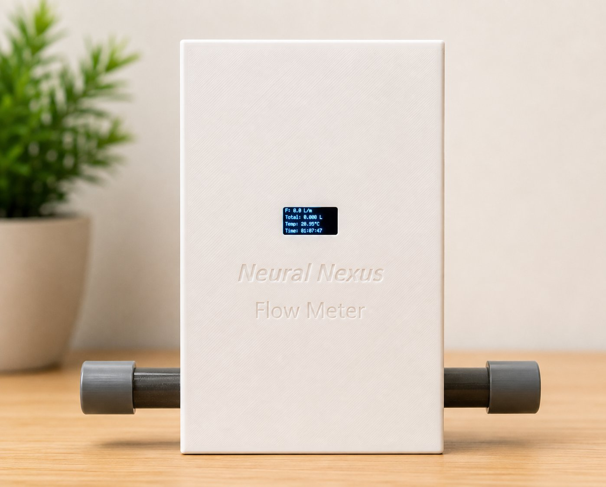

Smart Contact-based Flow Meter
An IoT-enabled smart water flow meter for EN1190: live flow monitoring, historical analytics and threshold alerts on a cross-platform mobile app, built around an affordable, locally manufacturable design.

Overview
Built for the EN1190 Engineering Design Project, this project turns a basic paddle-wheel flow sensor into a fully connected IoT device. An ESP8266 reads flow rate and water temperature, drives a local OLED display for standalone operation, and streams live readings over Wi-Fi, with the whole board running off a rechargeable Li-ion cell through a TP4056 charging circuit and a custom PCB in a 3D-printed enclosure.
On the software side, a React Native mobile app connects to the device in real time over WebSockets, backed by a Node.js server and SQLite database that store historical consumption data and enforce JWT-based authentication. Beyond live flow rate and temperature, the app surfaces total consumption, historical trends, multi-device management and configurable overflow/underflow alerts.
I owned both ends of this stack: the ESP8266 firmware reading and conditioning the flow-sensor and temperature signals and pushing them out over Wi-Fi, and the React Native app (Android and iOS) that consumes that stream, renders it live, and handles authentication and historical analytics. Getting both sides talking reliably over WebSockets, with the app staying responsive and the firmware staying real-time, was the core engineering problem.
Key Features
- 01Real-time flow rate and water temperature monitoring via a paddle-wheel sensor and ESP8266
- 02Local OLED display for standalone, app-free operation
- 03React Native mobile app (Android & iOS) with live WebSocket monitoring and historical analytics
- 04JWT-authenticated Node.js backend with a SQLite data store for consumption history
- 05Configurable overflow/underflow notifications and multi-device management in-app
- 06Custom PCB and 3D-printed enclosure, powered by a rechargeable Li-ion cell via TP4056 charging
Runs
Project Demonstration